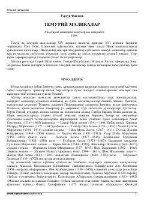

TMTemuriylar sulolasiga mansub buyuk malikalar hayoti va faoliyati haqidagi tarixiy asar.
Ushbu risola Temuriylar sulolasiga mansub bo'lgan iste'dodli va siyosatdon malikalar hayoti hamda faoliyatiga bag'ishlangan. Kitobda Saroy Mulk xonim, Gavhar Shod begim, Zebuniso begim kabi tarixda o'chmas iz qoldirgan ayollarning davlat boshqaruvidagi o'rni va madaniy hayotdagi xizmatlari yoritilgan.